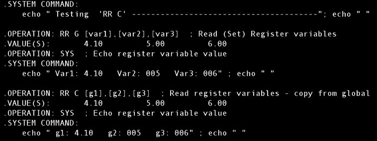

| .OPERATION: | RR G [var1],[var2],[var3] | ; Read (Set) global register variables |
| .VALUE(S): | 4.1., 5, 6 | ; Global register variable values |
| . | ||
| .OPERATION: | RR C [g1],[g2],[g3] | ; Copy local register variables from global |
| .VARIABLE(S): | [var1],[var2],[var3] | ; Global register variable names |
| RESULTS FILE |
|---|
|  |
| rrc_resu |